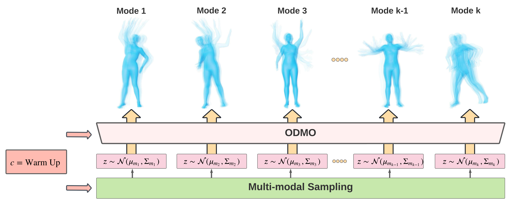

Roychowdhury Group @ University of California, Los Angeles
We propose a novel framework, On-Demand MOtion Generation (ODMO), for generating realistic and diverse long-term 3D human motion sequences conditioned only on action types with an additional capability of customization. ODMO shows improvements over SOTA approaches on all traditional motion evaluation metrics when evaluated on three public datasets (HumanAct12, UESTC, and MoCap). Furthermore, we provide both qualitative evaluations and quantitative metrics demonstrating several first-known customization capabilities afforded by our framework, including: (i) ability to discover different modes/styles of motion within each action type in the training set, and then generating samples from these modes on demand; (ii) ability to interpolate between pairs of specified modes (hence, on demand) within an action type to generate diverse motions not seen in the training set; and (iii) ability to customize trajectories and specify destinations of generated motion sequences. These capabilities significantly widen the spectrum of potential applications of such motion generation models. The novel on-demand generative capabilities are enabled by innovations in both the encoder and decoder architectures: (i) Encoder: Utilizing contrastive learning in low-dimensional latent space to create a hierarchical embedding of motion sequences, where not only the codes of different action types form different groups, but within an action type, codes of similar inherent patterns (motion styles) cluster together, making them readily discoverable; (ii) Decoder: Using a hierarchical decoding strategy where the motion trajectory is reconstructed first and then used to reconstruct the whole motion sequence. Such an architecture enables effective trajectory control.

Fig 1. : On-Demand MOtion Generation(ODMO) can generate diverse and realistic 3D human motion sequences conditioned on action type 𝑐 with the capability of automated discovery and controllable generation of different subtypes in a given category.
Fig 2. ODMO model architecture.